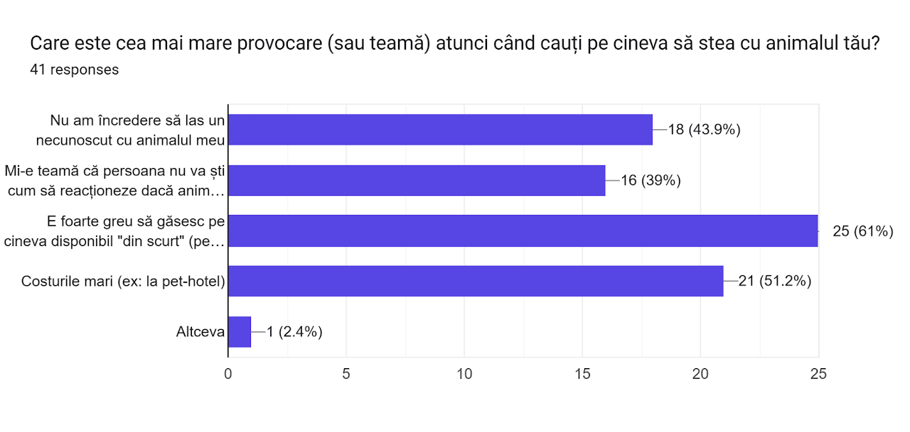
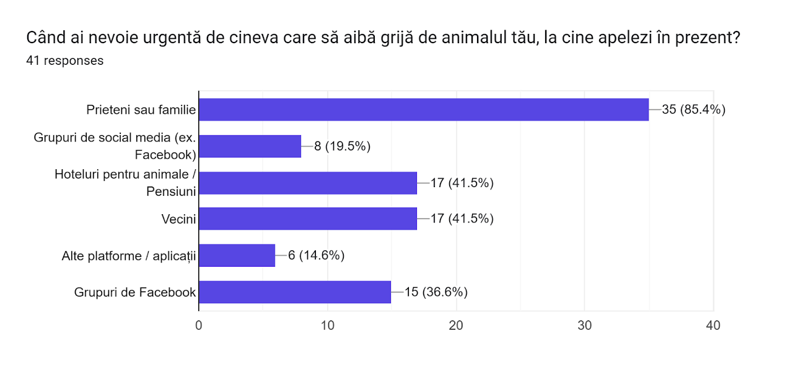

Product & Backend
Stoica Ana-Florina
Product definition and backend development.
anaflorina.stoica70@gmail.comIAS / 2026
A local pet-care marketplace.
A mobile app concept connecting pet owners with verified local sitters. This Fiki documents the project's development, customer research, and milestone deliverables.
About this page. All milestone documentation is kept on this Fiki. The customer-facing landing page is a separate M3 deliverable.
Project progress
Team, problem definition, proposed solution, and business model.
Research methods, survey findings, evidence, and product decisions.
Application structure, user flows, and the customer-facing page.
Recorded interviews, user types, a primary persona, user stories, and owner and sitter flows.
Team
Product definition and backend development.
anaflorina.stoica70@gmail.com
Pet owners who travel, work long hours, or face an emergency struggle to find someone reliable to look after their animal.
Friends, Facebook groups, and word of mouth can mean a slow, unstructured search: no verified reviews, no clear prices, and no dependable way to find help at short notice.
PetSitter is a mobile app concept connecting pet owners with local pet sitters in minutes.
Our value proposition combines local availability, trustworthy profiles, transparent prices, and protected payments.
These are planned product capabilities, not live services on this Fiki.
Product scope
Dog walking, home care, temporary boarding, feeding, and check-in visits.
Clear prices, availability, and real reviews on each pet sitter's profile.
Search by location and availability, including urgent, short-notice requests.
Direct chat and calls with sitters, plus notifications about your booking.
Secure in-app payments, with funds released after the care service.
Pet profiles with meal schedules, allergies, and special needs, shared with the sitter.
Customer segments
Urban owners of dogs, cats, and small pets who travel, work long hours, or need urgent help.
Students, animal lovers, and freelancers looking for flexible extra income through caring for animals.
Competition
| Alternative | The gap we identified | Our proposed advantage |
|---|---|---|
| Friends, family & Facebook groups | Uncertain availability, no consistent review system, and no payment protection. | Verified profiles, reviews, and secure payments. |
| Pet hotels | Potentially expensive, stressful for the animal, and limited by available spaces. | Care at home and flexible pricing. |
| Global platforms, such as Rover & Wag! | Our initial assumption: limited local coverage in Romania and a gap in urgent matching. | A local focus, fast matching, and Romanian-language support. |
Measurement
Business model
Business model
Business model hypotheses; pricing and paid demand still need validation.
Before building the solution, we needed to understand the problem. Our customer discovery explored how people find pet care, where that process breaks down, and what would make them trust someone new.
Research team: Stoica Ana-Florina & Anca Radu.
Last summer, Ana had to attend an event in another city and could not find anyone to look after her dog, Hector. Friends and family were busy. Facebook brought messages from unverified strangers, which felt unsafe.
In her experience, the pet-sitting apps she tried in Romania did not offer active local sitters who could help at short notice. That personal experience led to our first hypothesis: finding reliable pet care is especially stressful when the need is urgent.
Our initial solution hypothesis: a centralized mobile app with nearby sitters, availability filters, reviews, bookings for different care services, and secure payments.
Methodology
Use informal phone and WhatsApp conversations to explore frustrations, fears, and existing workarounds without starting with a sales pitch.
Qualitative researchUse community questions and polls, then a Google Forms survey, to see whether the same needs appear in a wider group.
Quantitative researchUse the findings to prioritize the concept. Next, test real bookings and payments with a small, manually matched pilot.
Next step / not yet completedResearch process
We targeted pet owners who travel frequently or work full time, using three local Facebook groups and asking friends to share the survey.
The informal conversations involved acquaintances and friends of friends, reached by phone and WhatsApp.
We reached potential sitters through student WhatsApp groups and our extended network to understand interest in flexible pet-care work.
Those conversations also explored trust, responsibilities, and concerns about receiving payment.
The conversations were informal and unstructured. This is a convenience sample recruited through our networks and communities, not a representative sample of all Romanian pet owners.
The questionnaire and informal conversations explored the following topics. The survey asks about absences of more than 3 hours.
Documentation

An open-question post asking how owners manage urgent pet care, with responses from community members.

The survey used to explore the problem. The original form is in Romanian; the questions above are presented in English.
Participant names and avatars have been removed from the publication copies. The original Romanian research wording is retained.
Survey / 41 responses
39 of 41 respondents reported cancellations or major stress when finding pet care.
See the evidence25 of 41 identified finding someone at short notice as a major challenge.
See the evidence22 of 41 selected this daily budget for a trustworthy, verified sitter.
See the evidencePercentages use the 41-response denominator. Combined results are calculated from respondent counts, not by adding rounded chart labels: 39/41 is 95.1%, not 95.2%. Stated budgets indicate interest, not completed purchases.
Quantitative evidence

53.7% canceled or changed plans multiple times, 22% once, and 19.5% experienced major stress without canceling. Together, 39 of 41 respondents were affected.

61% struggle with short notice, 43.9% distrust strangers, and 39% worry about medical emergencies. High costs also matter to 51.2%. Multiple answers were possible.

39 of 41 selected a positive daily budget. The largest group, 53.7%, chose 100-150 RON. This supports a pricing experiment; it does not yet validate the business model.

85.4% rely on friends or family. Pet hotels and neighbors each appear in 41.5% of responses. The overlapping Facebook/social-media choices are reported separately, not summed.

78% travel or leave their pet alone for more than 3 hours weekly or a few times a month. That supports exploring repeat care alongside emergency bookings.
Research implications
We added a mandatory sitter ID check and a verified-profile badge to the concept, addressing owners' reluctance to leave pets with strangers.
A free, 15-minute introductory video call or in-person meet-and-greet gives owners and sitters a chance to get comfortable before committing.
We separated service formats more clearly: walks and active boarding for dogs, quieter boarding or drop-ins for cats, and care tailored to other animals.
The concerns about medical emergencies reinforced the pet-profile feature: allergies, routines, and special needs should be shared with the sitter.
Next stage
Ready for a limited pilot
Our discovery suggests a recurring, stressful problem and interest in paying for reliable care. The next step is a small MVP: a separate landing page and a manually matched pilot with verified sitters. Paid demand has not yet been demonstrated.
We need to observe whether owners actually request care, accept a price, and complete a booking, and whether sitters can deliver reliably. Those behaviors will test the business model more directly than survey enthusiasm.
The product's screens, functionality, and connections between views, including the behavior of buttons and navigation.
The separate, customer-facing landing page introduces the value proposition and invites potential owners or sitters to express interest.
From customer interviews to product decisions.
Research & UX draftRequired milestone evidence
We conducted three face-to-face problem interviews with people from the primary customer segment: pet owners who need reliable care when work, travel, or unexpected plans take them away from home. The recordings below are selected extracts from the actual interviews, chosen because they contain the clearest and most relevant insights for shaping PetSitter. Each extract is paired with the participant profile, context, and product implication it surfaced.
21 years old · IT professional · Travels frequently for work · Owner of Bobi, a mixed-breed dog
When an unexpected work trip to Cluj came up, two dog hotels could not accept a next-day booking. Anda had to call four friends until someone working from home could help. She described the workaround as stressful and guilt-inducing, and rejected social-media strangers as unsafe.
23 years old · Graphic designer · Hybrid schedule · Owner of Luna, an apartment cat
Aida travels about twice a month for long weekends. After a traumatic pet-hotel experience in a small glass cage, she now pays an older neighbor 50 RON per day for a daily visit. Her biggest concerns are sudden illness and whether a sitter really understands cats.
20 years old · Student and part-time waiter · Often works double shifts and events · Owner of Rico, a cockatiel
Raul nearly canceled a three-day festival trip because standard pet hotels do not accept birds. He also refused unknown Facebook sitters because a home with cats or dogs could put Rico under severe stress, and common sprays or air fresheners can be dangerous for birds.
We prioritize the owner persona because M2 contains 41 owner survey responses. Sitter needs are included in the stories and flows, but rely on five team-reported conversations with limited attached evidence. The survey supports the needs below; it does not prove that they all describe the same individual.
Put dates and urgent availability in the search flow. Show no-match and declined-request states rather than implying guaranteed care.
M2: care challengesUS-01, US-06 / UC-01, UC-02Make profile verification and genuine reviews easy to inspect. Offer a conversation before booking without implying an ID check proves care expertise.
M2: trust concernsUS-02, US-04 / UC-01Include routines, allergies, special needs, and an emergency contact in a pet profile shared with the selected sitter.
M2: emergency concernsUS-03, US-09 / UC-01, UC-04Show the full booking total and fee breakdown before payment. Test actual booking intent separately from stated budget.
M2: daily budgetsUS-05 / UC-01Further context: 85.4% currently rely on friends or family, and 78% report frequent travel or time away. Search behavior, device use, and the proposed interaction sequence still need direct UX testing.
Two sides of the marketplace
Finds suitable care, checks sitter profiles, shares care instructions, and manages bookings and payments.
Sets services and availability, reviews care requests, looks after pets, and tracks completed bookings and payouts.
Pet owner
Works full time and needs dependable care when work or travel disrupts her usual arrangements.
Name, age, city, job, pet, and digital habits are scenario assumptions. The budget uses the most-selected M2 survey range, not a validated product price.
Andreea learns that she must leave Bucharest the next morning for a two-day work trip. Her usual family contact is unavailable. She needs a sitter who can provide care at her home, discuss Milo's routine, and confirm the booking before she leaves.
Successful outcome: an accepted, paid booking with agreed care instructions and a visible contact route. If no suitable sitter is available, she receives a clear answer early enough to arrange an alternative.
The persona is a fictional composite informed by M2, not an interview participant. User stories and flows are design proposals, not tested app behavior.
Proposed requirements
Priorities are our design proposal, not a ranking selected by survey respondents. Each story includes testable acceptance criteria and links to the relevant use case.
As a pet owner, I want to filter sitters by location, dates, pet type, and service so that I can find someone who fits my care needs.
Use cases: UC-01, UC-02 / Basis: short-notice difficulty
As a pet owner, I want to review a sitter's identity-check status, experience, services, and reviews so that I can make an informed choice.
Use case: UC-01 / Basis: trust concerns
As a pet owner, I want to save my pet's routine, allergies, special needs, and emergency contact so that the selected sitter has the information needed for care.
Use cases: UC-01, UC-04 / Basis: emergency concerns
As a pet owner, I want to message a sitter and arrange a short meet-and-greet so that we can check compatibility before the first booking.
Use case: UC-01 / Basis: trust concerns; meeting format is a design proposal
As a pet owner, I want to review the complete booking cost and pay securely so that I know what I am committing to.
Use case: UC-01 / Basis: budget findings and planned payment feature
As a pet owner, I want clear request and booking statuses so that I can distinguish confirmed care from a request that still needs action.
Use cases: UC-01, UC-02, UC-04 / Basis: disrupted plans
As a returning pet owner, I want to review a completed service and request the same sitter again so that I can reuse a care arrangement that worked.
Use case: UC-04 / Basis: recurring care need; rebooking is a design proposal
As a pet sitter, I want to complete verification and set my services, prices, pet preferences, and availability so that I receive appropriate requests.
Use case: UC-03 / Basis: M2 verification decision
As a pet sitter, I want to inspect the care requirements, dates, and expected earnings before accepting so that I can decide whether I can provide the service.
Use cases: UC-01, UC-04 / Basis: marketplace design assumption
As a pet sitter, I want to see the service and payout status so that I know whether payment is pending, released, or requires action.
Use case: UC-04 / Basis: team-reported sitter payment concerns
Interaction design
Each numbered sequence shows the main path, followed by its decision points and recovery paths. Screen names describe the intended app; these diagrams do not replace the M3 wireframes.
Choose location, dates, pet type, and service. Select Search.
Review matching availability and price. Open a sitter profile.
Read verification and reviews. Optionally message or arrange a meet-and-greet.
Sign in if needed, select the pet, review shared instructions, and submit. Status: Pending.
The sitter checks requirements and earnings. Acceptance triggers an availability recheck. Status: Awaiting payment.
The owner reviews the full total and terms, then pays. Revalidate availability; successful payment confirms the booking for both parties.
Select short-notice care and enter the actual dates and required start time.
Show verified sitters offering the selected service and time. Availability is not yet a booking guarantee.
Review the profile, share care requirements, and send a request using UC-01.
If accepted in time, continue to checkout. Otherwise show the decline or expiry and offer another search.
Stories: US-01, US-06 / Continues through UC-01 for booking and payment
Add care experience, location, and supported pet types.
Provide the required identity information. Status: Pending verification; not bookable.
Set service types, prices, and availability. Save changes as a draft while review is pending.
After approval and completion of required fields, review the profile and make it bookable.
Review the agreed schedule, routines, special needs, and contact information.
The sitter follows the instructions and uses the booking conversation for questions and updates.
The sitter marks care complete. The owner can confirm completion or report a service issue.
After completion is resolved, release funds under the agreed policy. Show payout status, enable a review, and offer a new request for repeat care.
Next UX iteration
Planned, not completed. No usability results are claimed.
Record task completion, time, errors, requests for help, and participants' explanations. Test the prototype with owners and sitters, then revise the flows.
These are UX and operational assumptions, not validated policies. The M3 wireframes will need to cover the screens and states documented here.